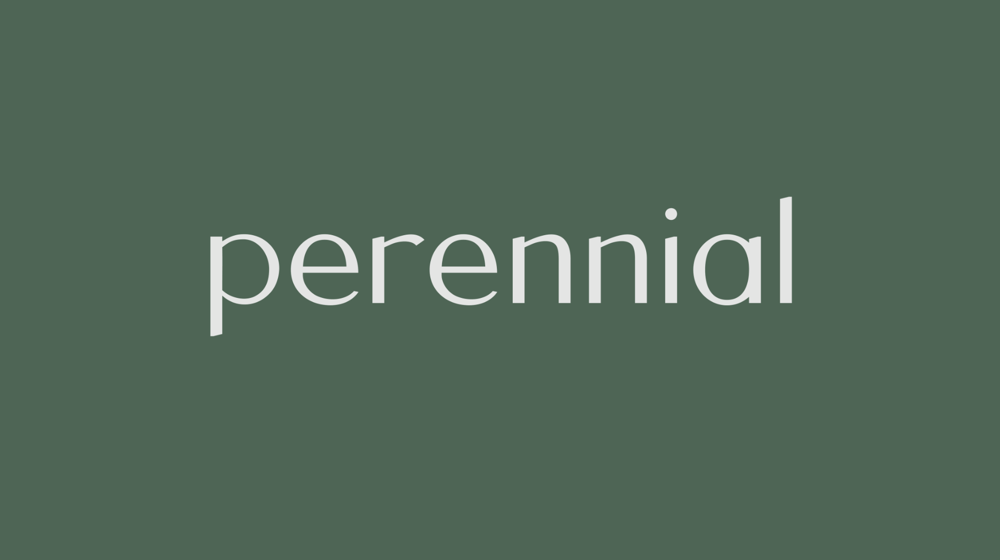
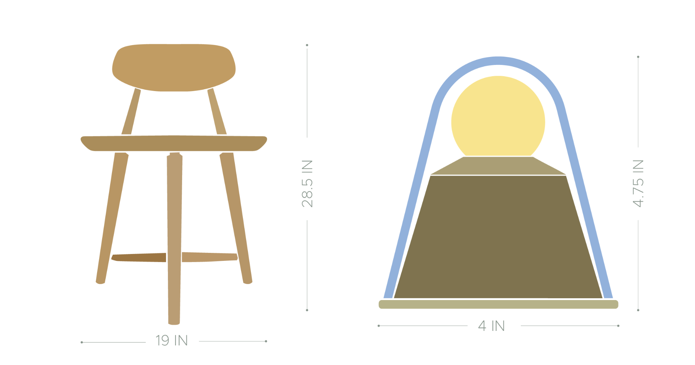
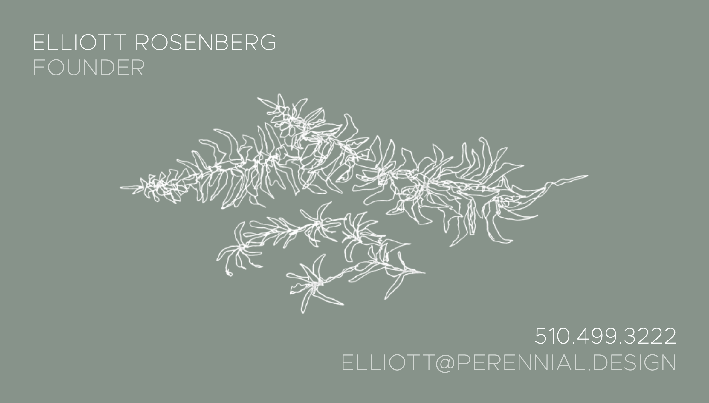
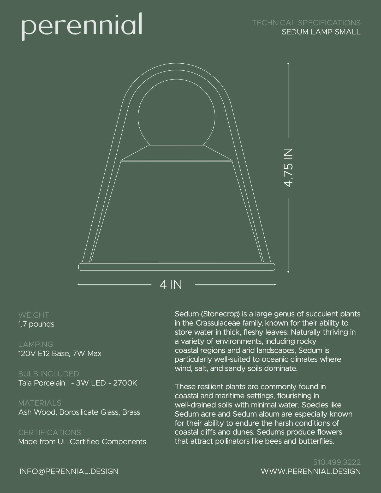
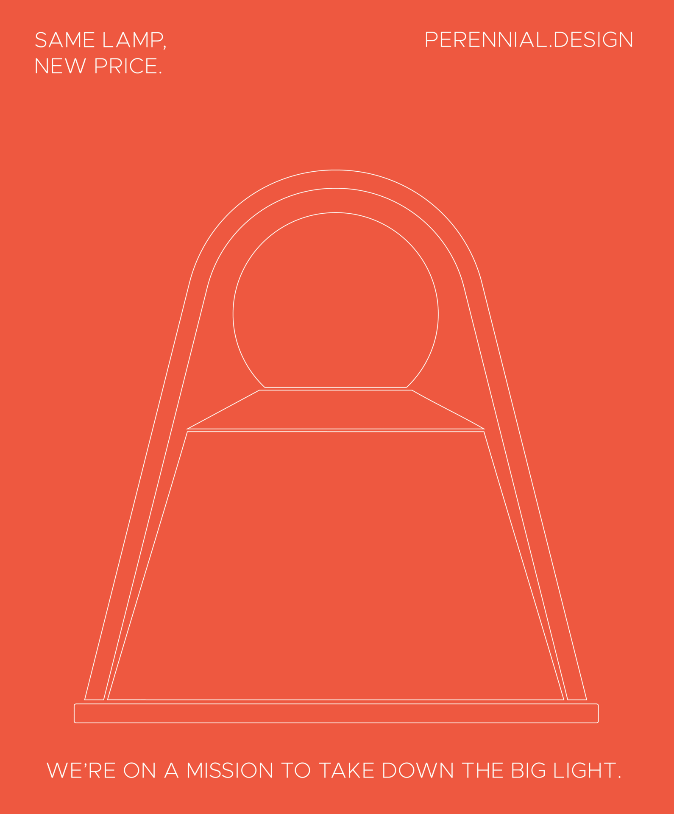
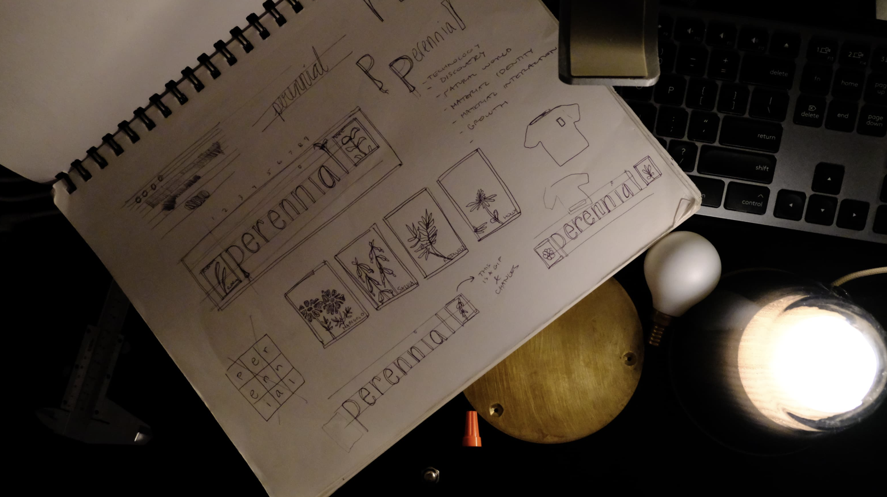
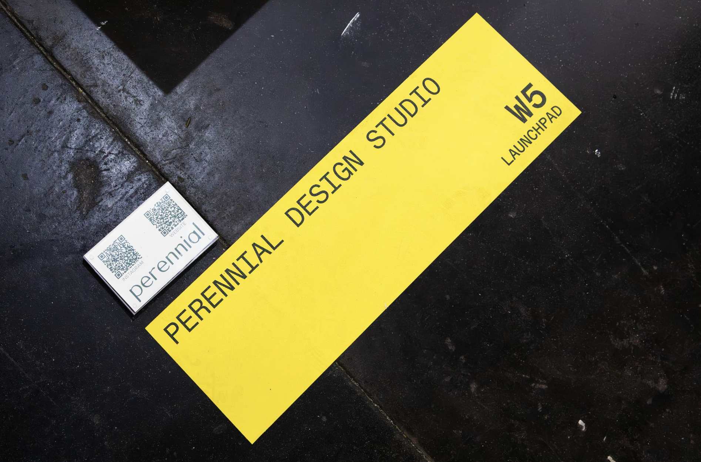

Perennial
Design Studio
perennial.design ↗

Understated Presence, Enduring Materiality, Intuitive Design.
Perenniality refers to the enduring nature of things. It is the idea that we are the most authentic versions of ourselves in the midst of and in response to adversity. The challenges of the natural world sharpen the identities most core to us, stripping away the superfluous and unnecessary. In this constant cycle of challenge and renewal, the things that truly matter are revealed — the resilient, the reliable, and the essential.
Perennial Design Studio was created out of a need to serve the simple things that enrich our lives. It is both an obligation and an honor to support the honesty of these objects — those we sleep on, sit with, eat at, and look upon. These points of daily engagement, often taken for granted, deserve care and consideration. It is our duty to ensure that the tools facilitating daily life are well made, thoughtfully designed, and imbued with integrity.
There is power in subtlety, in restraint, and in the spaces between. The most profound objects have an honesty that draws us in, to look closer. Materials hold stories, memories, and potential. They age with grace, grow in character, and become more beautiful through use. Endurance is not just a function of durability but of the richness that comes with time. They are easy to understand and live with, feeling inevitable and intuitive. Like evolution itself, these objects develop their form and function over time, responding to the challenges of their environment.
The studio is agnostic to specific typology, and approaches design from a varied set of lenses with a current expertise in furniture and lighting.
The visual system needed to embody the studio's philosophy directly — restrained, honest, and durable. The mark is built around a set of geometric forms that hold up at any scale, from a business card to a trade show banner. Typography is set in a clean grotesque that keeps attention on the work rather than the brand itself.


Print collateral was designed to function as a material extension of the brand. Business cards and technical specification sheets carry the same visual logic as the digital identity — precise, minimal, and made to be held.





ICFF — Perennial work on display